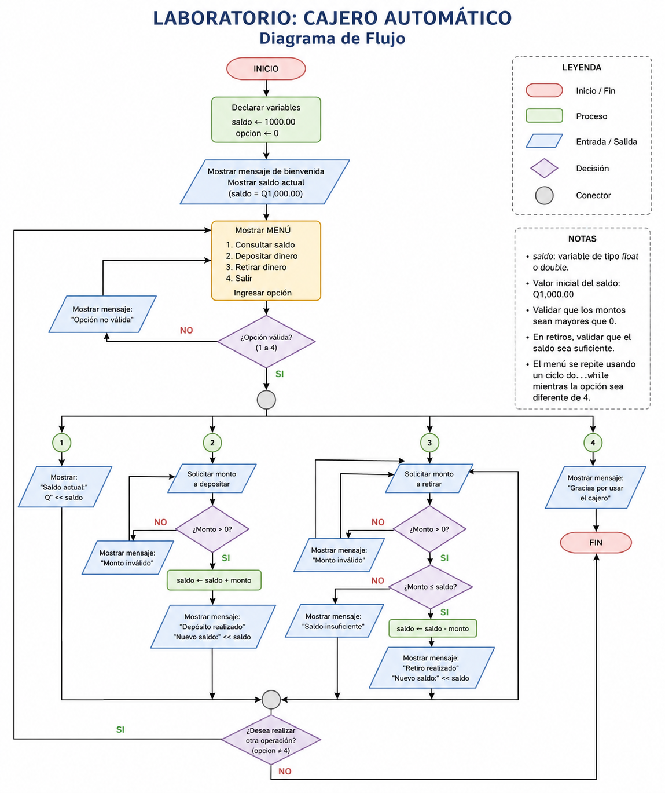

6 Laboratorio No. 3: ciclos, enum y simulación de un cajero automático
6.1 Propósito del laboratorio
En este laboratorio repasaremos brevemente las estructuras que ya conocemos y construiremos un programa completo que combine decisiones, repetición y opciones de menú.
Al finalizar, el estudiante podrá:
- reconocer cuándo utilizar
if,switch,while,forydo...while; - construir ciclos
forpara repeticiones conocidas; - representar opciones mediante un tipo enumerado
enum; - integrar un menú repetitivo con
switchydo...while; - validar depósitos y retiros en una simulación de cajero automático.
80 minutos. El propósito no es estudiar muchas estructuras nuevas, sino aprender a combinarlas en un programa claro y funcional.
6.2 Ruta de trabajo
| Momento | Actividad | Tiempo |
|---|---|---|
| 1 | Recordatorio de estructuras básicas | 10 min |
| 2 | Ciclo for: explicación y ejercicios |
15 min |
| 3 | Uso de enum |
10 min |
| 4 | Construcción del cajero automático | 40 min |
| 5 | Prueba y cierre | 5 min |
6.3 Recordatorio rápido
Un programa puede imaginarse como una persona que sigue instrucciones:
- una secuencia indica qué hacer paso a paso;
- una decisión permite escoger entre varios caminos;
- un ciclo permite repetir una actividad;
- un menú reúne varias operaciones y espera la selección del usuario.
6.3.1 Estructura secuencial
Las instrucciones se ejecutan en el mismo orden en que aparecen.
#include <iostream>
using namespace std;
int main() {
int numero1, numero2, suma;
cout << "Ingrese el primer numero: ";
cin >> numero1;
cout << "Ingrese el segundo numero: ";
cin >> numero2;
suma = numero1 + numero2;
cout << "La suma es: " << suma << endl;
return 0;
}Analogía: preparar café implica seguir una secuencia: calentar agua, agregar café, servir y endulzar.
6.3.2 Decisión con if
if se utiliza cuando una acción depende de una condición.
if (edad >= 18) {
cout << "Es mayor de edad." << endl;
} else {
cout << "Es menor de edad." << endl;
}Analogía: antes de salir, una persona observa el clima. Si está lloviendo, lleva paraguas; de lo contrario, sale sin él.
6.3.3 Selección múltiple con switch
switch es útil cuando una variable puede representar varias opciones concretas.
switch (opcion) {
case 1:
cout << "Consultar saldo" << endl;
break;
case 2:
cout << "Depositar" << endl;
break;
case 3:
cout << "Retirar" << endl;
break;
default:
cout << "Opcion no valida" << endl;
}break detiene el switch después de ejecutar el caso seleccionado. Sin él, el programa puede continuar ejecutando los casos siguientes.
6.3.4 Repetición con while
while repite un bloque mientras una condición sea verdadera.
int contador = 1;
while (contador <= 5) {
cout << contador << endl;
contador++;
}Analogía: mientras todavía haya platos sucios, se continúa lavando.
6.4 Ciclo for
El ciclo for se utiliza principalmente cuando conocemos cuántas veces debe repetirse una acción.
for (inicializacion; condicion; actualizacion) {
// instrucciones que se repiten
}En el siguiente ejemplo:
for (int i = 1; i <= 5; i++) {
cout << i << endl;
}ocurre lo siguiente:
int i = 1crea e inicializa el contador.i <= 5determina si el ciclo continúa.i++aumenta el contador después de cada repetición.
Analogía: recorrer cinco escritorios para entregar una hoja. Se conoce desde el inicio cuántos escritorios deben visitarse.
6.4.1 Ejercicio 1: mostrar los números del 1 al 10
Complete y ejecute el siguiente programa:
#include <iostream>
using namespace std;
int main() {
for (int i = 1; i <= 10; i++) {
cout << i << " ";
}
cout << endl;
return 0;
}6.4.2 Ejercicio 2: tabla de multiplicar
Construya un programa que solicite un número y muestre su tabla de multiplicar del 1 al 10.
#include <iostream>
using namespace std;
int main() {
int numero;
cout << "Ingrese un numero: ";
cin >> numero;
for (int i = 1; i <= 10; i++) {
cout << numero << " x " << i
<< " = " << numero * i << endl;
}
return 0;
}¿Qué parte del ciclo habría que modificar para mostrar la tabla únicamente del 1 al 5?
6.5 Uso de enum
Un enum permite asignar nombres claros a un conjunto de valores relacionados.
enum Dia {
LUNES = 1,
MARTES,
MIERCOLES,
JUEVES,
VIERNES
};Internamente, los valores continúan siendo números, pero el código resulta más fácil de leer.
Analogía: en lugar de identificar las luces de un semáforo como 0, 1 y 2, podemos llamarlas ROJO, AMARILLO y VERDE.
#include <iostream>
using namespace std;
enum EstadoSemaforo {
ROJO = 1,
AMARILLO,
VERDE
};
int main() {
int opcion;
cout << "1. Rojo" << endl;
cout << "2. Amarillo" << endl;
cout << "3. Verde" << endl;
cout << "Seleccione el estado: ";
cin >> opcion;
switch (opcion) {
case ROJO:
cout << "Detenerse." << endl;
break;
case AMARILLO:
cout << "Prepararse para detenerse." << endl;
break;
case VERDE:
cout << "Puede avanzar." << endl;
break;
default:
cout << "Estado no valido." << endl;
}
return 0;
}6.5.1 Ventaja principal
Compare estas dos expresiones:
if (opcion == 3)if (opcion == VERDE)La segunda comunica mejor la intención del programa.
6.6 Proyecto del laboratorio: cajero automático
6.6.1 Situación
Un cajero automático presenta un menú y espera que el usuario seleccione una operación. Después de consultar, depositar o retirar, el menú vuelve a mostrarse. El programa termina únicamente cuando se selecciona Salir.
6.6.2 Operaciones requeridas
- Consultar saldo.
- Depositar dinero.
- Retirar dinero.
- Salir.
El saldo inicial será de Q1,000.00.
6.6.3 Reglas
- Los depósitos deben ser mayores que cero.
- Los retiros deben ser mayores que cero.
- No se puede retirar una cantidad superior al saldo disponible.
- El menú debe repetirse hasta seleccionar la opción de salida.
- Las opciones se representarán mediante
enum. - El menú se controlará con
switch. - La repetición se realizará con
do...while.
6.7 4.1 ¿Por qué utilizar do...while?
El cajero debe mostrar el menú por lo menos una vez. Por ello, do...while es apropiado: primero ejecuta las instrucciones y luego evalúa si debe repetirlas.
do {
// instrucciones
} while (condicion);Analogía: al llegar a un cajero, primero se observa el menú. Después de realizar una operación se decide si se hará otra o si se terminará.
6.8 Diseño previo
Antes de programar, identifique las partes principales:
Inicio
Definir saldo inicial
Definir las opciones del menu
Hacer
Mostrar menu
Leer opcion
Segun la opcion
Consultar saldo
Depositar
Retirar
Salir
Informar opcion invalida
Mientras la opcion no sea Salir
Fin6.9 Diagrama de flujo

6.10 Definición de las opciones con enum
enum OpcionCajero {
CONSULTAR_SALDO = 1,
DEPOSITAR,
RETIRAR,
SALIR
};Como el primer valor es 1, los siguientes toman automáticamente los valores 2, 3 y 4.
6.11 Construcción paso a paso
6.11.1 Paso 1: variables principales
double saldo = 1000.00;
double monto;
int opcion;6.11.2 Paso 2: mostrar el menú
cout << "\n===== CAJERO AUTOMATICO =====" << endl;
cout << "1. Consultar saldo" << endl;
cout << "2. Depositar dinero" << endl;
cout << "3. Retirar dinero" << endl;
cout << "4. Salir" << endl;
cout << "Seleccione una opcion: ";
cin >> opcion;6.11.3 Paso 3: procesar la opción
switch (opcion) {
case CONSULTAR_SALDO:
cout << "Saldo disponible: Q" << saldo << endl;
break;
case DEPOSITAR:
// solicitar y validar el deposito
break;
case RETIRAR:
// solicitar y validar el retiro
break;
case SALIR:
cout << "Gracias por utilizar el cajero." << endl;
break;
default:
cout << "Opcion no valida." << endl;
}6.11.4 Paso 4: repetir el menú
do {
// mostrar menu y procesar opcion
} while (opcion != SALIR);6.12 5. Programa completo
#include <iostream>
#include <iomanip>
using namespace std;
enum OpcionCajero {
CONSULTAR_SALDO = 1,
DEPOSITAR,
RETIRAR,
SALIR
};
int main() {
double saldo = 1000.00;
double monto;
int opcion;
cout << fixed << setprecision(2);
do {
cout << "\n===== CAJERO AUTOMATICO =====" << endl;
cout << "1. Consultar saldo" << endl;
cout << "2. Depositar dinero" << endl;
cout << "3. Retirar dinero" << endl;
cout << "4. Salir" << endl;
cout << "Seleccione una opcion: ";
cin >> opcion;
switch (opcion) {
case CONSULTAR_SALDO:
cout << "Saldo disponible: Q" << saldo << endl;
break;
case DEPOSITAR:
cout << "Ingrese el monto a depositar: Q";
cin >> monto;
if (monto > 0) {
saldo = saldo + monto;
cout << "Deposito realizado correctamente." << endl;
cout << "Nuevo saldo: Q" << saldo << endl;
} else {
cout << "El monto debe ser mayor que cero." << endl;
}
break;
case RETIRAR:
cout << "Ingrese el monto a retirar: Q";
cin >> monto;
if (monto <= 0) {
cout << "El monto debe ser mayor que cero." << endl;
} else if (monto > saldo) {
cout << "Fondos insuficientes." << endl;
} else {
saldo = saldo - monto;
cout << "Retiro realizado correctamente." << endl;
cout << "Nuevo saldo: Q" << saldo << endl;
}
break;
case SALIR:
cout << "Gracias por utilizar el cajero automatico." << endl;
break;
default:
cout << "Opcion no valida. Intente nuevamente." << endl;
}
} while (opcion != SALIR);
return 0;
}6.13 Pruebas del programa
Antes de considerar terminado el ejercicio, pruebe por lo menos los siguientes casos:
| Prueba | Acción | Resultado esperado |
|---|---|---|
| 1 | Consultar al iniciar | Mostrar Q1,000.00 |
| 2 | Depositar Q500.00 | Nuevo saldo Q1,500.00 |
| 3 | Retirar Q300.00 | Nuevo saldo Q1,200.00 |
| 4 | Retirar más que el saldo | Mostrar fondos insuficientes |
| 5 | Depositar un número negativo | Rechazar el monto |
| 6 | Seleccionar una opción inexistente | Mostrar opción no válida |
| 7 | Seleccionar Salir | Finalizar el ciclo |
Un programa no está terminado solamente porque compila. También debe probarse con datos correctos, incorrectos y casos límite.
6.14 Reto opcional
Cuando el programa básico funcione, agregue una de las siguientes mejoras:
- solicitar un PIN antes de mostrar el menú;
- contar cuántas operaciones se realizaron;
- establecer un retiro máximo por operación;
- mostrar un mensaje cuando el saldo sea menor que Q100.00.
6.15 Cierre
En el cajero automático se combinaron varias estructuras:
enumdio nombres a las opciones;switchseleccionó la operación;ifvalidó depósitos y retiros;do...whilemantuvo activo el menú;- las variables almacenaron el saldo y los montos.
El valor del ejercicio no está únicamente en hacer funcionar un cajero, sino en comprender cómo varias estructuras pequeñas pueden integrarse para resolver un problema completo.